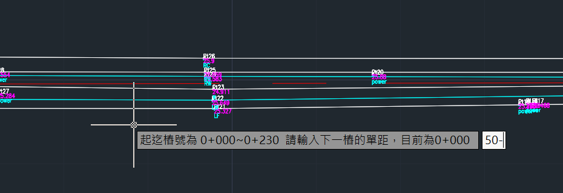

HanksVBA繪圖資料庫操作流程(二)
前言
承前篇HanksVBA繪圖資料庫操作流程(一)，在點資料與線資料完成之後，已經初步可以看見平面地形圖長相。在帶狀結構的設計中，平面圖上所記載內容為特徵線，如要進行橫斷面的繪製，可以透過中心線的斷面樁來對特徵線做交會分析，透過交會點換算相對中心線的橫向距離，並藉由交會點與特徵線前後相鄰頂點進行高程內插，取得所需地形資訊。
相關的基本流程將包含:
- 設定流心
- 設定樁號
- 補充樁號
- 清除樁號
主畫面

步驟5.設定流心
流心即帶狀構造之中心線，可以依照該基地是否進行地籍套繪分成兩種處理方法
A.偏移中心線
在地籍套匯之後，為避免臨田講話，原則將中心線偏移至兩側地籍線中間以求公平，此時就需要在平面地形圖開啟地籍圖層，透過指令PL沿中心點連線。
B.照舊使用
未經地籍套匯，經會議決議為照舊使用，則需將既有渠道之兩側渠底或兩側渠頂皆按實量回來，再透過以下流程進行流心繪製，繪製完畢後檢查起點及終點，做適當的延伸操作。
流程
- 點選按鈕設定流心
- 輸入流心連線距離
- 點選按鈕生成流心
- 移動至CAD
- 選擇第一條邊界，按下Enter
- 選擇第二條邊界，按下Enter
- 確認成果
PS:如果渠道較為蜿蜒，可以設定為5，渠道較為平直，可以設定為20
PS.2:中心線生成之後可以作為參考點使用，如果認為點資料生成位置不合理(通常會在轉彎處、起點或終點)，可以刪除點資料進行調整或是手動用指令PL重新描繪也OK
步驟6.設定樁號
繪製完中心線後，需要透過斷面樁來得到橫斷面的長相，各個樁號的間距50公尺進行。
流程
- 輸入起始樁號
- 輸入橫斷面單邊寬
- 點選按鈕取得樁號
- 移動至CAD
- 選擇中心線
- 輸入下一個間距
- 確認成果
PS:如果中心線的方向與想像中不同，可以勾選樁號反轉。
PS2:下一個間距如果全部都是50公尺為整數樁進行取樣，則輸入50-，後續的樁號就會自動以50作為距離進行。 
步驟7.補充樁號
一般來說，中心線都會用整數樁的方式進行取樣樁號劃分(0+050.0+100.0+150...等)，但若遇到地形比較有變化的部分，可以再透過補充樁號的過程在該處補上斷面樁，未來無論在構造物設計或計算土方時也會比較精準。
流程
- 點選按鈕補充樁號
- 移動至CAD
- 點選中心線
- 輸入生成方式
- 點選位置
- 輸入樁號
- 是否要繼續?(Y/N)
- 輸入N結束
步驟8.清除樁號
當斷面樁位置異常時，可以透過此步驟進行同步清理圖說與中心線工作表，如果是progeCAD的朋友，建議先用圖層隔離的方式僅顯示斷面樁的圖層會比較好進行框選。
流程
- 點選按鈕清除樁號
- 移動至CAD
- 框選斷面文字及斷面樁
- 完成
結語
經歷上述過程便能夠將中心線的位置、斷面樁的劃分作一個比較良好的規劃，在後續橫斷面、縱斷面的輸出過程時也能夠比較真實的還原地形現況。
目前所遇到的中心線仍然還是用PL所進行繪製的折線，對於工程設計而言，除了折線外還可能會遇到曲線的部分，曲線是一個比較複雜的題目，筆者僅針對簡單的圓曲線有進行VBA程式設計，可以在單曲線定線工具中找到相關的說明，原理也大抵是對圓曲線做折線的擬合。